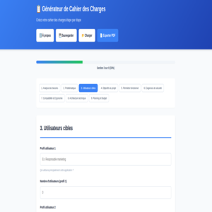
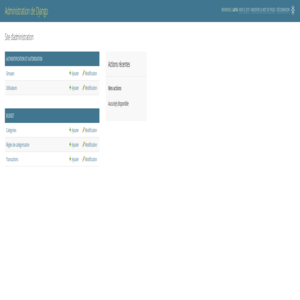
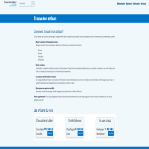
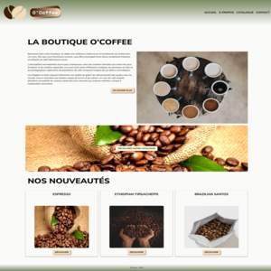

Développeuse d'applications en reconversion professionnelle
Titulaire du TP DWWM • En formation Concepteur Développeur
d'Applications
Après près de 15 ans d'expérience dans l'agroalimentaire, j'ai choisi de me reconvertir dans le développement web en 2024. Passionnée par la résolution de problèmes et la création de solutions techniques, j'ai obtenu mon titre professionnel de Développeur Web et Web Mobile en juillet 2025.
Actuellement en formation Concepteur Développeur d'Applications (niveau Bac+3), je développe mes compétences en programmation orientée objet, architecture logicielle et conception d'applications web modernes.
Mon parcours professionnel m'a apporté rigueur, autonomie et capacité à gérer des projets complexes. Ces qualités, je veux les appliquer aujourd'hui au développement d'applications métier, en apportant une vision métier chez les développeurs juniors.
Voici une sélection de mes projets les plus aboutis, démontrant mes compétences en développement front-end et back-end.

Générateur interactif de cahier des charges pour projets web avec sauvegarde automatique et export PDF.

Application de gestion budgétaire développée en Python pour approfondir mes compétences dans ce langage.

Plateforme de mise en relation artisan-client développée en TypeScript dans le cadre de ma formation TP DWWM.

Site e-commerce fictif développé en formation DWWM, avec gestion de catalogue produits.
Ces projets ont été réalisés dans un contexte d'apprentissage et reflètent ma progression technique.
Maîtrise progressive des technologies web modernes à travers ma formation et mes projets personnels.
Vous recherchez une développeuse junior motivée et autonome ? Parlons-en !